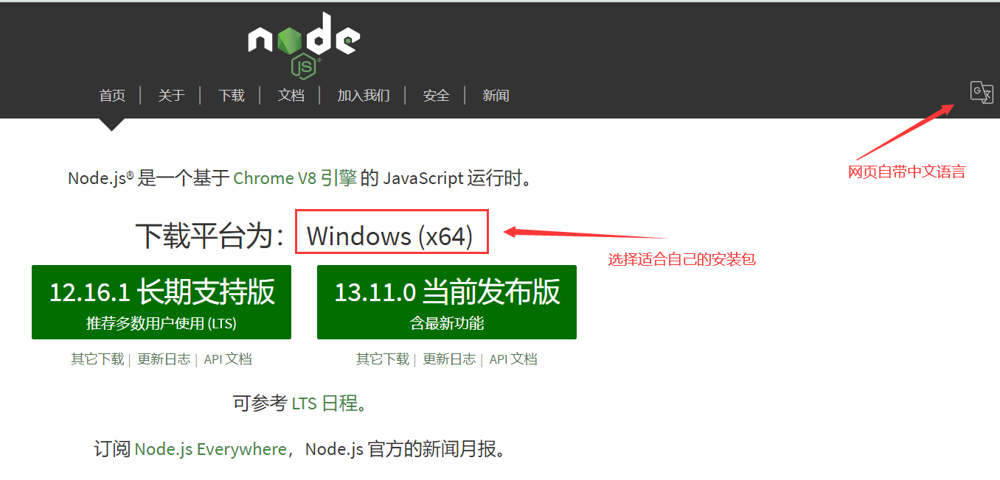
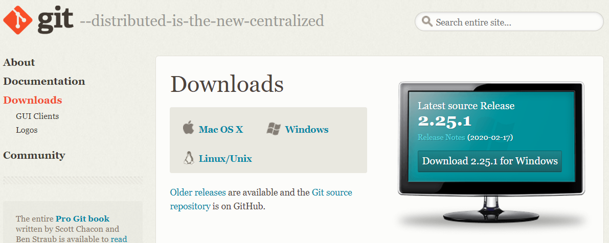
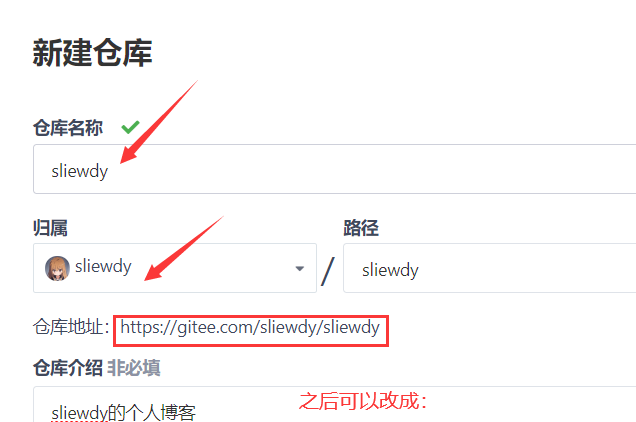
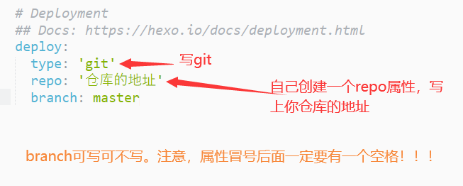
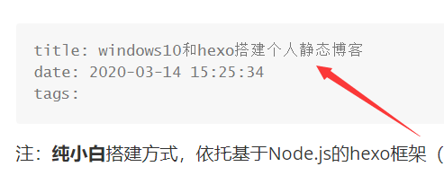
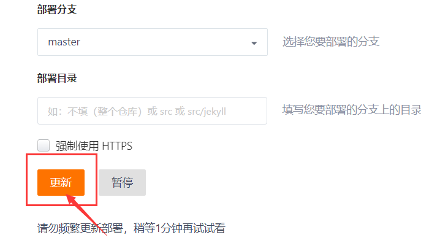

Windows10+Hexo搭建个人静态博客
本文章发布时间久远，有些内容不再具有参考性，望周知
前期准备
安装Node.js
- 进入Node官网下载安装包:
- 
安装Git
- 进入git官网下载安装包:
- 
安装Hexo
通过【git bash】进入命令行窗口
手动使用cd命令移步至想要让程序安装的文件夹
可通过命令node -v查询是否安装成功/node的版本号
※使用node.js中带有的npm工具下载安装Hexo：
输入命令npm install -g hexo-cli 以安装
★还可以通过cnpm工具下载！(淘宝镜像)
操作方法：
使用命令
npm install -g cnpm --registry=https://rgistry.npm.taobao.org安装cnpm使用命令
cnpm install -g hexo-cli安装（理论上该方法的下载速度比上面的快）
同样可以通过hexo -v验证安装是否成功
搭建并部署
初始化Hexo
- 使用
hexo init xxx对Hexo初始化，此时会clone许多文件进当前目录下的文件夹/xxx里，需要等待一段时间 - 使用
cd xxx进入该文件夹 - 使用
npm install完成安装
搭建和预览
可在对应目录里 ：
使用命令hexo s对当前网页进行预览。(全称：server)
- 用给出的网址在浏览器里进行预览[本地网址]
使用命令hexo n创建一个新文章（md格式）（全称：new）
- 会出现一个文件地址，以后更新的博客都可以在这里找到，也可以不利用命令行，自己在里面创建md文件
使用命令hexo clean清除缓存
使用命令hexo g生成静态文件（全称：generate）
- 之后再
hexo server一下，即可预览到更新的内容
部署
以下使用码云gitee作为例子演示
进入码云官网：传送门
注册一个账号，记住自己的用户名(username)和邮箱(useremail)
如果是第一次使用git，需要对其进行简单的配置
打开[git bash]，依次输入：
1 | git config --global user.name "用户名" |
紧接着在[码云]里创建一个新仓库，仓库名字以自己的用户名作为仓库名（使博客域名简单特殊化）
（注意，选择公开仓库，而不是私有！！）

进入gitbash输入命令cnpm install --save hexo-deployer-git,以安装部署插件
之后，找到_config.yml这个文件，这是一个配置文件，我们接下来的部署都要通过这个文件来更改
配置
使用文本编辑器（不推荐直接使用记事本）在_config.yml最后的几行里找到deployment，输入相关内容

注意：属性写完后，冒号的后面要有一个空格！！！
部署到远端
直接使用hexo d即可！（全称：deploy）
如果系统再需要输入用户名和密码，即是我们在码云里注册时使用的。
现在我们在去码云出刚刚创建的仓库查看，就能看见新增了许多内容了！
于是，在我们的仓库上方的服务处开启page服务：


之后，我们就可以通过浏览器浏览：
https://username.gitee.io 来查看我们的博客了！
（usernsme就是用户名，如果之前的仓库名不以这个来设置，就无法单单利用这个域名访问）
常见问题
编写的博客图片无法显示
进入配置文件
_config.yml，找到post_asset_floder属性更改内容为：
post_asset_folder: true（注意空格）这个属性打开后，每
hexo new一个文章，会自动新建一个与之同名的文件夹

通过npm或cnpm命令安装本地上传图片功能的插件：
npm install https://github.com/CodeFalling/hexo-asset-image --save将所需图片都放到跟随文件一起生成的文件夹里面
使用markdown插入图片时，文件路径直接填文件名即可
注：虽然按照5的方法，在本地显示不了，但是实际上能在远端显示
多重标题情况
hexo自己为用户设置了默认标题：

因此，无需用户手动添加一级标题
网站访问的内容没有更新
这是gitee（码云）自己的问题，如果使用github，或是腾讯云等等就没有这个问题了。
gitee的普通用户需要自己手动部署：
因此，需要手动进入page页面，手动点击“更新”：

如何进行基本配置和美化
见下一篇文章！
下期预告：
设置个性化背景和鼠标点击效果
设置社交图标和打赏图标
依托主题美好自己的博客
…